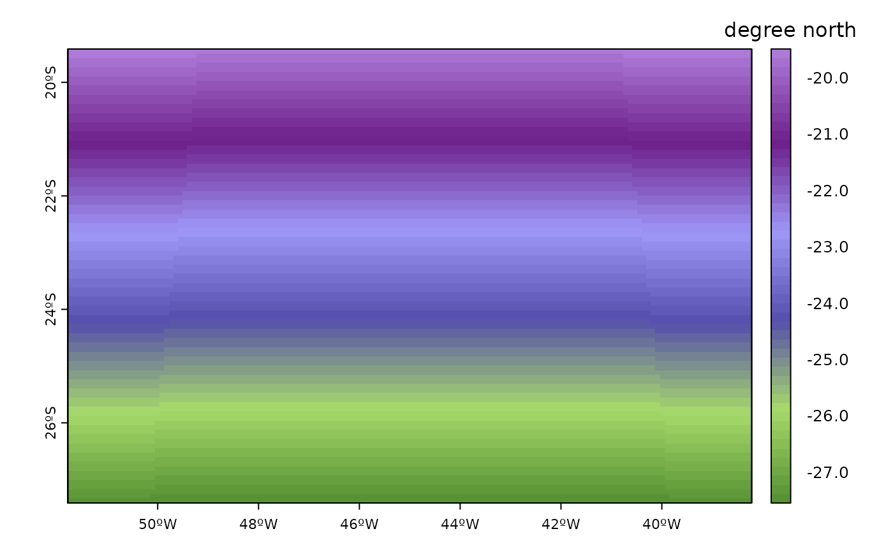

Custon plot for SpatRaster (terra R-package) object based on terra package
Arguments
- r
raster
- color
color scale, or name of a custom color scale (see notes)
- ncolor
number of colors
- proj
TRUE to project the raster to lat-lon
- plg
list of parameters passed to terra::add_legend
- pax
list of parameters passed to graphics::axis
- latitude
add a latitude axis
- longitude
add a longitude axis
- int
interval of latitude and longitude lines
- grid
add grid (graticule style)
- grid_int
interval of grid lines
- grid_col
color for grid lines
- add_range
add legend with max, average and min r values
- ndig
number of digits for legend_range
- log
TRUE to plot in log-scale
- range
range of original values to plot
- min
minimum log value for log scale (defoul is -3)
- max
maximum log value for log scale
- unit
title for color bar (defoult is )
- ...
arguments to be passing to terra::plot
Examples
wrf <- paste(system.file("extdata", package = "eva3dm"),
"/wrfinput_d01", sep="")
r <- wrf_rast(file=wrf, name='XLAT')
plot_rast(r)
